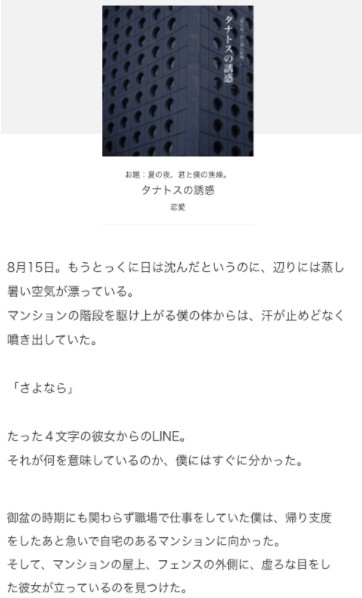
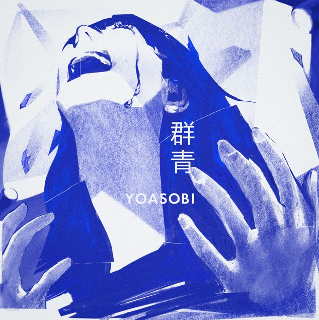
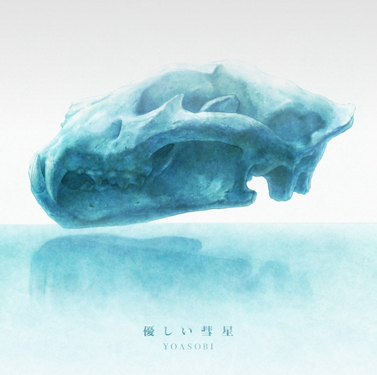

對 Ayase 來說，如何將小說中出現的詞彙在歌詞中運用得當、以及樂曲要怎麼編排才能更凸顯其中的世界觀，這些都是在「將小說音樂化」過程
時會遇到的難題，但同時對他來說也是樂趣所在。而 ikura 則表示，在演唱 YOASOBI 的歌曲時，必須專注在小說中主角的情緒拿捏，將自己代入
到故事當中，感受主角們的心情，才能用歌聲詮釋好如同詩句般的歌詞。
YOASOBI 推出的第一支作品〈夜に駆ける〉，即是以星野舞夜所著的小說《タナトスの誘惑》為原型而創作的歌曲，不少閱讀完原作後再去聽歌的人
都表示「更能理解小說中的意境了」。就連原作者本人也在推特上推薦大家先去聽〈夜に駆ける〉再來閱讀小說，如此一來才能更深入自己的作品。

舉第一章《夜に駆ける》的一段歌詞為例。
「さよなら」だけだった
その一言で全てが分かった
日が沈み出した空と君の姿
フェンス越しに重なっていた
僅僅只是「再見」兩個字
已讓我明白了一切
日落西山的天空與圍欄外的妳的身影
重疊了在一起
再比對小說的開頭：
8月15日。明明太陽早已下山，周圍卻飄蕩著悶熱的空氣。
在公寓樓梯往上跑的我，身上的汗像是漫無止境地噴出來。
「後會無期」
她發給我的LINE只有僅僅四個字。
而這四個字意味著什麼，我馬上就明白了。
本應是盂蘭盆節卻仍然要上班的我，做好回去的準備便加緊腳步趕回自己居住的公寓。
然後，我在在公寓的天台，圍欄的外方，找到了雙目無神的她。
在這之後還有像是「 あの夢をなぞって」也是以詮釋小說為主所創作的歌曲，都在音樂榜單中拿到了不錯的成績。
2020年開始也活耀的參與漫畫以及動畫產業，2020年的「群青」採用日本作家 山口つばさ 的漫畫作品《藍色時期》 (ブルーピリオド) 為創作靈感。
《藍色時期》於 2020 年榮獲日本「漫畫大賞」第1名以及講談社漫畫賞一般部門大賞。評審委員們都一致認同、這是一部從中得到無比熱情與勇氣的作品。
2021年更以「優しい彗星」作為在 Netflix 上播出的動畫作品，《 BEASTARS 》第二季的主題曲。
